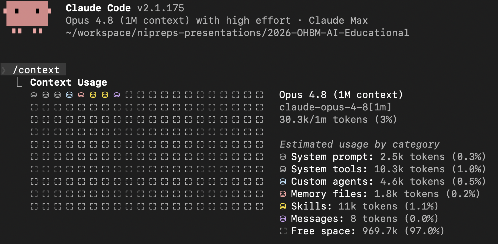
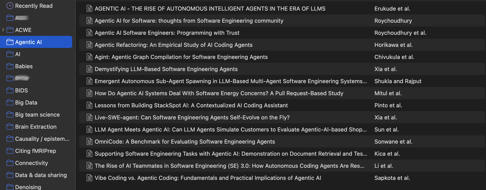
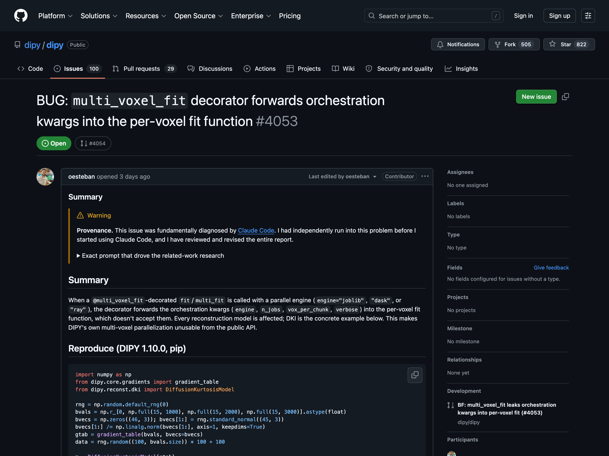
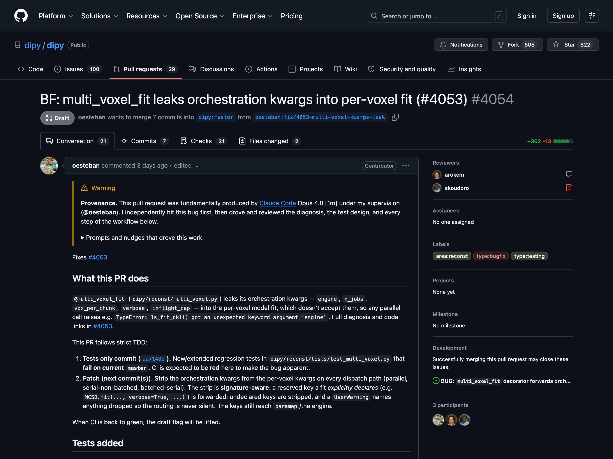
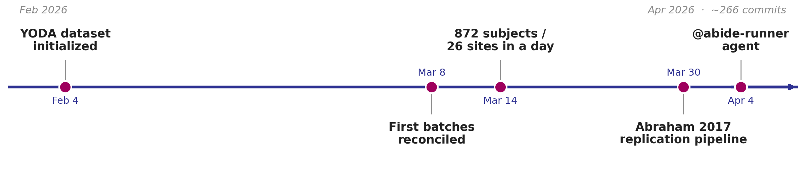

name: title layout: true class: cover title-slide --- count: false counter: false .boxed-content[ .pull-left.center[ <img src="../remark/assets/ohbm2026-logo.png" width="130%" /> ] .pull-right.center[ <br /> <br /> <br /> <br /> <br /> # Using Large Language Models (LLMs) in Neuroimaging Research ## LLMs for Coding *Oscar Esteban* <object type="image/svg+xml" data="images/qr-talk-url.svg" style="width: 40%"></object> ] ] ??? Welcome — this is the coding half of the course. By the end of my twenty minutes you'll have a concrete setup you can use on Monday morning, not a list of things AI might one day do for you. --- name: nofooter layout: true .perma-sidebar[ <p class="rotate"> <a rel="license" href="http://creativecommons.org/licenses/by/4.0/"><img alt="Creative Commons License" style="border-width:0; height: 20px; padding-top: 6px;" src="https://i.creativecommons.org/l/by/4.0/88x31.png" /></a> <span style="padding-left: 10px; font-weight: 600;">OHBM Educational — LLMs for Coding (June 14<sup>th</sup>, 2026)</span> </p> ] --- name: footer-nobar template: nofooter layout: true .footer[ .footer-logo-row[ <img src="../remark/assets/ohbm2026-footer.png" height="25px" /> ] ] --- name: footer template: nofooter layout: true .footer[ .footer-logo-row[ <img src="../remark/assets/ohbm2026-footer.png" height="25px" /> ] .footer-bar[] ] --- class: no-counter count: false ## OHBM 2026 DISCLOSURES .section-mark.large[ I have no conflicts of interest in relation to this presentation to disclose. ] --- class: no-counter count: false ## ONSITE WiFi .section-mark[ Network ESSID: ## OHBM 2026 Password: ## attendee ] --- # Starting point: use a coding agent .boxed-content[ .small[ > Unlike a chatbot that answers questions and waits, Claude Code can read your files, > run commands, make changes, and autonomously work through problems... > makes coordinated edits across them, runs tests to verify the fix, > and commits the changes if you ask." .align-right[ https://code.claude.com/docs/en/how-claude-code-works ] ] <br /> .large.center[Agent = Model + Harness] .small[ > Claude Code, Codex, and Gemini CLI are coding harnesses: > a model wrapped in a runtime that reads your files, runs your tests, > and manages context. The web chat (Claude.ai, ChatGPT) is the model alone, > behind a conversation box — no harness around your repo. .align-right[ [Böckeler 2026](https://martinfowler.com/articles/exploring-gen-ai/harness-engineering-coding-agents.html) ] ] ] ??? --- # Harness convention: the `AGENTS.md` file .boxed-content[ .divided.larger[ | | `README.md` | `AGENTS.md` | |---|---|---| | Reader | Humans (contributors, users) | AI coding agents | | Content | What the project is, install, usage, how to cite, contribution guidelines | Build/test commands, conventions and commit style, code-style snippets, project structure, git workflow, explicit do/ask-first/never boundaries | | Register | Prose, narrative | Concrete, operational, copy-pasteable | | Relationship | — | *Complements* README, doesn't replace it | ] ] ??? --- count:false # Harness convention: the `AGENTS.md` file .boxed-content[ .divided.larger[ | | `README.md` | `AGENTS.md` | |---|---|---| | Reader | Humans (contributors, users) | AI coding agents | | Content | What the project is, install, usage, how to cite, contribution guidelines | ~~Build/test commands, conventions and commit style, code-style snippets, project structure, git workflow, explicit do/ask-first/never boundaries~~ <br />Index of links to contents | | Register | Prose, narrative | Concrete, operational, copy-pasteable | | Relationship | — | *Complements* README, doesn't replace it | ] ] ??? --- .boxed-content[ <div style="margin-top: 15px" class="asciicast" id="write-agents-md" data-speed="14" data-cols="140" data-rows="34"></div> ] ??? This plays in fast-forward, so don't read along — watch the rhythm. I describe the project in plain English, and Claude Code drafts the contract section by section. What it produced is on the next slide. --- # What it wrote — the CV manager's CLAUDE.md .boxed-content[ .codescroll[ ````markdown # CLAUDE.md This file provides guidance to Claude Code (claude.ai/code) when working with code in this repository. ## Status This repository is greenfield: at the time of writing it contains no code, only this guidance. The notes below describe the intended system. As the codebase materializes, replace planned descriptions with concrete commands and file references, and keep this file in sync with reality. ## Purpose A personal CV system for Oscar Esteban (ORCID-backed academic CV) with three pillars: 1. **ORCID synchronization** — bidirectional sync between the local records and the user's ORCID profile (publications, grants, employment, education). Treat ORCID and the local YAML database as two replicas that must converge; any sync logic needs a conflict story (which side wins, how divergence is detected and surfaced). 2. **A YAML publication database** — the source of truth for all scholarly output, stratified by record type: journal papers, oral conference presentations, poster presentations, invited talks, software contributions, Stage 1 registered reports, preprints, and similar. The stratification is a first-class concept — record type drives how an item is rendered, deduplicated, and matched against ORCID. 3. **PDF/LaTeX CV generation** — tooling that compiles CV variants (e.g., long-form, short-form, topic-tailored) to PDF from the YAML database via LaTeX. This tooling is expected to be tested. When designing data structures, the YAML schema is the architectural center of gravity: ORCID sync reads/writes it, and the LaTeX generator reads it. Changes to the schema ripple into both. Keep one canonical schema and avoid letting the generator or the sync layer accrete their own divergent representations. ## Commit conventions Use [Conventional Commits](https://www.conventionalcommits.org/): a type prefix on every subject line, e.g. `enh:`, `fix:`, `chore:`, `docs:`, `test:`, `refactor:`. Keep the body as short as the change allows — omit it for trivial changes. Always add yourself as a co-author trailer: ``` Co-Authored-By: Claude Fable 5 <noreply@anthropic.com> ``` ## Pull request conventions All changes land through PRs — do not push directly to the default branch. - **Title**: conventional-commit type in ALLCAPS, e.g. `FIX: Correct publication date of Esteban et al. (2019)`. - **Body**: more descriptive than a commit body but not over-explained; state what changed and why, skip the play-by-play. - **Issue linkage**: when a PR closes an issue, include the closing keyword, e.g. `Fixes: #340`. ## Working notes - The data is biographical and citation-bearing — correctness of dates, DOIs, author lists, and venue names matters more than throughput. Prefer surfacing a suspected discrepancy over silently "fixing" a record. - The LaTeX toolchain (pdflatex/lualatex/latexmk, BibTeX/biblatex) is a build dependency for PDF generation; reach for the `latex` skill when writing or debugging `.tex` sources, and the `zotero` skill if reference management connects to a Zotero library. ```` ] ] ??? --- # Context engineering .boxed-content[ .small[ > Building with language models is becoming less about finding the right words and phrases for your prompts, > and more about answering the broader question of “what configuration of context is most likely to generate > our model's desired behavior?" .align-right[ https://www.anthropic.com/engineering/effective-context-engineering-for-ai-agents ] ] .center.small[ <a href="https://code.claude.com/docs/en/context-window" target="_blank"> <p></p> Click for a demo of how Claude Code's context evolves along a session. </a> ] ] ??? --- # The `/s2-query` skill .boxed-content[ .codescroll[ ````markdown --- name: s2-query description: > Search Semantic Scholar for academic papers. Returns structured results with metadata (title, authors, year, venue, DOI, citation count, abstract). Supports year range and citation count filters. Use this skill whenever the user wants to search for papers, find academic references, look up research on a topic, or query Semantic Scholar — even if they just say "find me papers about X" or "what's been published on Y." allowed-tools: Read, Bash --- # Semantic Scholar Query Skill Search the Semantic Scholar API for academic papers. This skill wraps a shared script that other skills (e.g., `/zotero`) also use, ensuring consistent S2 interaction across the grant-writing toolkit. --- ## Argument Dispatch Parse `$ARGUMENTS` (the text after `/s2-query`) as the search query. If empty, ask the user for search terms. --- ## Step 0 — Check API Key ```bash test -n "$SEMANTIC_SCHOLAR_API_KEY" || echo "NO_S2_KEY" ``` If missing, stop with: > ⚠️ `$SEMANTIC_SCHOLAR_API_KEY` not set. > Get a key at https://www.semanticscholar.org/product/api > Then: `export SEMANTIC_SCHOLAR_API_KEY='your-key'` --- ## Step 1 — Run Search Use the shared script: ```bash python ~/.claude/skills/s2-query/scripts/s2_search.py "<query>" [options] ``` ### Available options | Flag | Description | Example | |---|---|---| | `--limit N` / `-n N` | Max results (default: 10, max: 100) | `-n 20` | | `--year RANGE` | Year filter | `--year 2022-2025` | | `--min-citations N` | Minimum citation count | `--min-citations 50` | | `--offset N` | Pagination offset | `--offset 10` | | `--quiet` / `-q` | Suppress stderr table (JSON only) | `-q` | The script outputs: - **stderr**: a human-readable table (shown to the user) - **stdout**: a JSON array of S2 paper objects (for piping) ### Infer filters from context If the user's request implies filters, apply them: - "recent papers on X" → `--year 2023-2025` - "highly cited work on X" → `--min-citations 50` - "seminal papers on X" → `--min-citations 100` - "just a few" → `-n 5` --- ## Step 2 — Present Results The script prints a table to stderr. After running, ask the user what they want to do with the results: - **Add to library**: pipe to the zotero sync script: ```bash python ~/.claude/skills/s2-query/scripts/s2_search.py "<query>" -q | \ python ~/.claude/skills/zotero/scripts/zotero_sync.py --repo-dir . add ``` Or if the user selected specific papers, filter the JSON first and pipe the selection. - **Just browse**: no further action needed — the table is already displayed. - **Refine**: re-run with different filters or a modified query. --- ## Integration with other skills This script is the single source of truth for S2 queries. Other skills use it: - **`/zotero search`** — runs the script, presents results, pipes selections to `zotero_sync.py add` - **`/train-reviewers`** — subagents call the script for domain research (with `--year` and `--min-citations` filters) - **`/grant-write`** — inline reference resolution delegates to `/zotero search`, which uses this script When modifying the S2 query logic, update the script — all skills benefit. ```` ] ] ??? --- .boxed-content[ <div style="margin-top: 15px" class="asciicast" id="s2-query" data-speed="4" data-cols="140" data-rows="34"></div> ] ??? --- # Et voilà .boxed-content[ <p></p> - that said, my `/zotero` skill would probably better be an MCP; - [MCP = Model Context Protocol](https://modelcontextprotocol.io/introduction) ] ??? --- # Contributing back — the bug .boxed-content[ .center[ <p></p> ] ] ??? A real bug I hit in DIPY's diffusion code, filed as issue #4053. The honest part is the "Provenance" note at the top: I ran into this independently first, and Claude Code then diagnosed the root cause — and I say exactly that, on the issue. Disclosing how the work was done is part of contributing back responsibly. --- # Contributing back — the fix (in review) .boxed-content[ .center[ <p></p> ] ] ??? The fix is PR #4054 — and note it is still a draft, in review, not merged: AI made the PR cheap, it did not make review cheap, and a human still owns that. The body discloses tool and model, links the issue, and follows strict TDD — a failing-tests-only commit first, then the patch — so a reviewer sees the bug before the fix. I found the bug; the agent helped diagnose and implement; I read and own every line. --- # Always check the contributing guidelines .boxed-content[ DIPY's binding obligations are just its PR-template checklist + commit conventions + the NIPY code of conduct: .divided.tight[ | DIPY requires | PR #4054 | |---|---| | Tests covering changes (≈100% coverage) | ✅ strict TDD — failing `TEST:` commit first, then `BF:` fix | | All tests pass locally / CI | ✅ CI green | | Follow DIPY coding style | ✅ `STYLE:` commits | | Commit prefixes (`BF` `RF` `NF` `TEST` `STYLE` …) | ✅ `TEST:` `BF:` `STYLE:` `RF:` | | "Type of Change" + labels | ✅ Bug fix · `type:bugfix` `type:testing` | | Link the issue | ✅ `Fixes #4053` | | NIPY code of conduct | ✅ | | AI disclosure · DCO · CLA · sign-off | ➕ none required by DIPY — disclosed anyway | ] ] -- .boxed-content[ <div class="admonition warning" style="margin-top: 30px"> <i class="fa-solid fa-triangle-exclamation"></i> <p>Open-source projects must get ready now — and openly discuss what their AI-assisted ("vibe coding") contribution policies should be.</p> </div> ] ??? --- # The impact of vibe coding .boxed-content.larger.no-bullet[ * .large[<i class="fa-solid fa-check"></i> **Problem resolved**] .indent[.gray-text[Created a thorough issue report, wrote tests first, and proposed a fix] ] <br /> * .large[<i class="fa-solid fa-scale-unbalanced"></i> **The trade off**] .indent[ .gray-text[Am I more likely to contribute back again?] ] <br /> * .large[<i class="fa-solid fa-person-falling-burst"></i> **Creates a new problem**] .indent[ .gray-text[Did I learn something about DIPY? Maybe, but very little.] ] <br /> ] --- # The ABIDE challenge .boxed-content[ <br /> <br /> <br /> .center[ <p></p> ] .center[ ABIDE I + II · ~2,200 subjects · 43 sites · fMRIPrep on Curnagl (UNIL HPC) github.com/.large.larger[**oesteban/abide_fmriprep**] ] ] ??? The project I'd put off for years: run all of ABIDE — both releases, around two thousand two hundred subjects — through fMRIPrep on an HPC cluster. What changed this time is that I never logged into the cluster myself. I drove the whole thing through a coding agent from my laptop over about two months: it set up a YODA/DataLad dataset, submitted the jobs, and reconciled the results. This is exactly the glue work — the devops around a standard pipeline — that agents are genuinely good at. --- count: false .boxed-content[ <iframe src='https://wall.sli.do/event/bnbXrk8WP6djx1a7d4m88u?section=5b9e22bb-556b-433f-a3ff-0aa97c8dcc9a&integration=shared-present-mode' style="width: 100%; height: 600px; border: 0"></iframe> .center[<a href="https://app.sli.do/event/bnbXrk8WP6djx1a7d4m88u">Click here to participate</a>] ] ??? --- # A small experiment to conclude .boxed-content[ .larger.no-bullet[ Let's prompt Claude's models haiku, sonnet and opus, under three different contexts: - (1) from memory alone, - (2) grounded on the web, and - (3) grounded on a very simple RAG, the *LLM-wiki* (Karpathy 2026). ] > In QSIPrep (the diffusion MRI preprocessing pipeline by PennLINC), which exact command-line flag selects the output spaces, > e.g., to also write preprocessed DWI in `MNI152NLin2009cAsym` template space? > Give the exact flag and a one-line example invocation. Be concise and definitive. ] ??? Bridge --- # Test 1: force the model to work from memory alone .boxed-content[ <div style="margin-top: 15px" class="asciicast" id="grounding-1-training" data-speed="8"></div> ] ??? --- # Test 2: allow the model to access the web .boxed-content[ <div style="margin-top: 15px" class="asciicast" id="grounding-2-web" data-cols="110" data-rows="24" data-speed="8"></div> ] ??? --- # Test 3: allow the model to access an *LLM-Wiki* .boxed-content[ <div style="margin-top: 15px" class="asciicast" id="grounding-3-wiki" data-speed="8"></div> ] ??? --- # Measured: grounding beats a bigger search (*n*=30) .boxed-content[ <object type="image/svg+xml" data="images/qsiprep-grounding.svg" style="width: 100%; padding-top: 40pt;"></object> ] ??? --- template: title .center.middle.black[   ] ??? Thank you — happy to take questions, and the repos and skills are all linked from the QR on the title slide.